Abstract
Knowledge-Based Visual Question Answering (KB-VQA) requires models to answer questions about an image by integrating external knowledge, posing significant challenges due to noisy retrieval and the structured, encyclopedic nature of the knowledge base. These characteristics create a distributional gap from pretrained multimodal large language models (MLLMs), making effective reasoning and domain adaptation difficult in the post-training stage. We propose Wiki-R1, a data-generation-based curriculum reinforcement learning framework that systematically incentivizes reasoning in MLLMs for KB-VQA. Wiki-R1 constructs a sequence of training distributions aligned with the model's evolving capability, bridging the gap from pretraining to the KB-VQA target distribution. We introduce controllable curriculum data generation and a curriculum sampling strategy that selects informative samples likely to yield non-zero advantages during RL updates. Experiments on Encyclopedic VQA and InfoSeek demonstrate state-of-the-art results, improving accuracy from 35.5% to 37.1% on Encyclopedic VQA and from 40.1% to 44.1% on InfoSeek.
Introduction
Knowledge-Based Visual Question Answering (KB-VQA) is a challenging multimodal task that requires answering questions about an image by integrating external knowledge. A widely adopted approach is the Retrieval-Augmented Generation (RAG) framework: a retriever first fetches relevant knowledge passages from a large-scale knowledge base (e.g., Wikipedia), and a generator then produces an answer conditioned on this context.
However, the noise in the retrieval system is inherent, and the knowledge base typically consists of structured, encyclopedic information. The model must not only reason over noisy and imperfect external evidence but also comprehend retrieved information presented in a structured, encyclopedic form largely unseen during pretraining. These characteristics position KB-VQA as a challenging downstream task for pretrained MLLMs, one that demands robust reasoning ability and effective domain transfer.
Prior work has pursued two main directions: (1) improving retrieval quality, though retrieval remains inherently noisy; (2) enhancing reasoning to handle imperfect retrieval. Early efforts primarily relied on supervised fine-tuning (SFT), which may have limited reasoning robustness. More recent RL methods such as GRPO and DAPO have shown promise in general RAG settings, but their effectiveness in tasks requiring both multimodal reasoning and cross-domain adaptation, such as KB-VQA, remains largely unexplored.
Motivation: The Sparse Reward Problem
We apply the popular RL algorithm DAPO to KB-VQA and observe that over 80% of samples exhibit zero advantages during training, with overall training accuracy around only 10%. This indicates a severe sparse reward problem exacerbated by the distributional gap between pretraining and KB-VQA. Experiments with ground-truth retrieval confirm that retrieval noise is a significant contributing factor to the sparse reward and ineffective training.
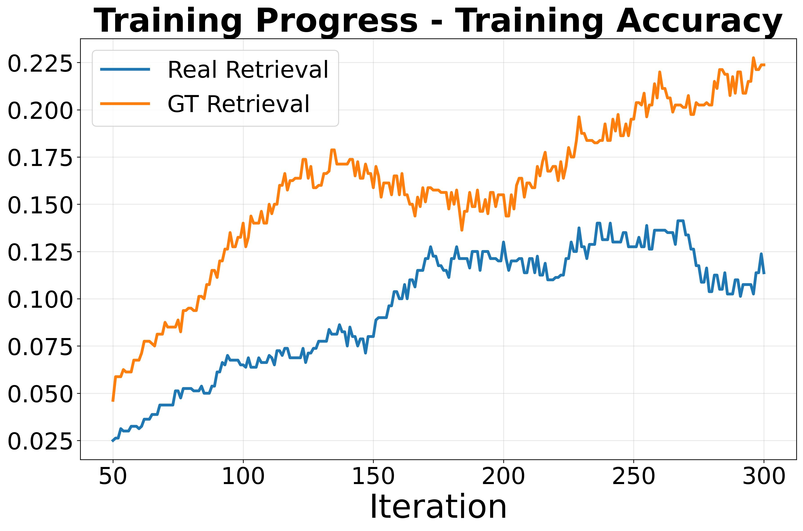
(a) Training accuracy remains low (~10%) under vanilla RL, highlighting the distribution gap.
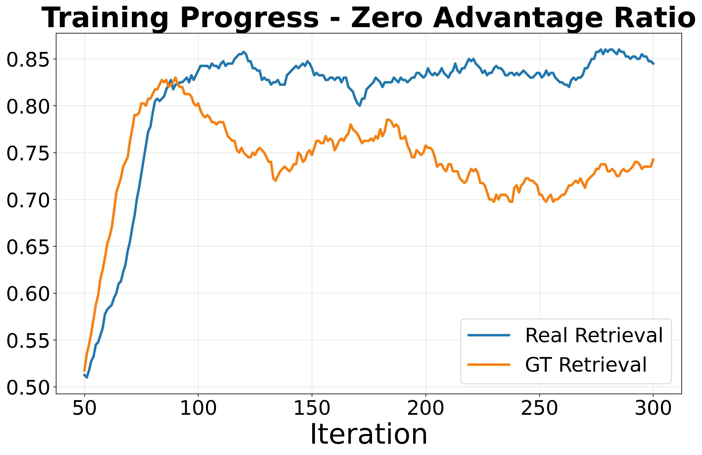
(b) Over 80% of trajectories have zero advantage, causing sparse learning signals.
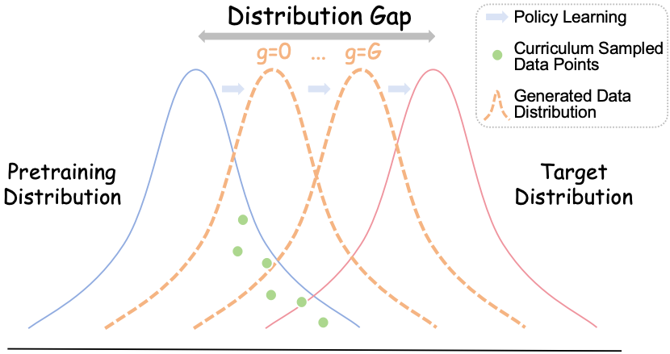
(c) Wiki-R1 narrows the gap via a curriculum of training distributions with progressively reduced discrepancies.
Method
We propose Wiki-R1, a data-generation-based curriculum RL framework that constructs a sequence of training distributions adaptively aligned with the model's evolving capability. Unlike conventional curriculum learning, we generate training data with controllable difficulty rather than selecting from a fixed dataset. The framework consists of two tightly coupled components:
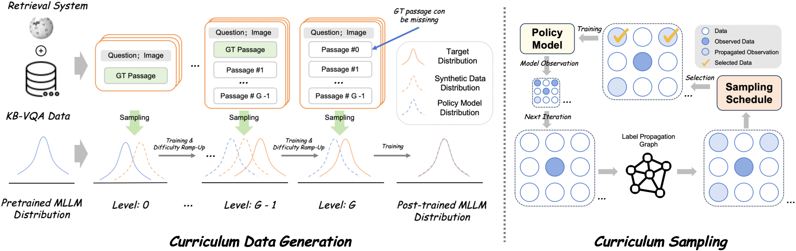
Wiki-R1 pipeline. Left: controllable curriculum data generation bridges pretraining and KB-VQA distributions. Right: curriculum sampling with observation propagation selects informative samples with non-zero advantages.
① Controllable Curriculum Data Generation
We manipulate the retriever to generate training samples with controllable difficulty via a discrete gap level g ∈ {0, 1, …, G}:
- Easiest (g=0): Only the ground-truth snippet (k=1, γ=1), closest to pretraining distribution.
- Intermediate (1 < g < G): k=g candidates with ground truth included, introducing increasing noise.
- Hardest (g=G): No guaranteed ground truth (γ=0), fully aligned with inference-time distribution.
Gap-Level Schedule: A sliding window of recent w samples tracks training accuracy. When the moving average exceeds threshold τ, we promote g → g+1, ensuring gradual exposure to harder distributions.
② Curriculum Sampling with Observation Propagation
Generated samples may not always match the intended difficulty. We introduce a curriculum sampling strategy that selects samples likely to yield non-zero advantages. Samples with training accuracy near 0.5 provide the strongest gradient signal.
Observation Propagation: Observed rewards are extremely sparse. We leverage the insight that VQA sample correlations relate to their associated KB articles. We construct a label propagation graph with edge weights reflecting KB article similarity, then propagate observed accuracies to unobserved samples:
Anew = α · K · Apred + (1−α) · A
This ensures effective curriculum sampling even under sparse observations.
Main Results
We evaluate Wiki-R1 on two standard KB-VQA benchmarks: Encyclopedic-VQA (EVQA) and InfoSeek. Unlike prior methods (e.g., ReflectiVA) whose performance is highly sensitive to the retrieval mode, Wiki-R1 consistently achieves strong performance across both benchmarks using a single unified retrieval system.
| Method | Retrieval | EVQA | InfoSeek | Avg. | ||||
|---|---|---|---|---|---|---|---|---|
| Model | Type | Single | All | Un-Q | Un-E | All | ||
| Zero-shot MLLMs | ||||||||
| BLIP-2 | - | - | 12.6 | 12.4 | 12.7 | 12.3 | 12.5 | 12.5 |
| InstructBLIP | - | - | 11.9 | 12.0 | 8.9 | 7.4 | 8.1 | 10.1 |
| LLaVA-1.5 7B | - | - | 16.0 | 16.9 | 8.3 | 8.9 | 7.8 | 12.4 |
| Qwen-2.5-VL 3B | - | - | 18.6 | 18.8 | 26.3 | 16.1 | 19.6 | 19.2 |
| Qwen-2.5-VL 7B | - | - | 26.6 | 26.3 | 25.3 | 17.2 | 19.9 | 23.1 |
| GPT-4V | - | - | 26.9 | 28.1 | 15.0 | 14.3 | 14.6 | 21.4 |
| Retrieval-Augmented Generation | ||||||||
| DPRV+T | CLIP ViT-B/32 | V.+T. | 29.1 | - | - | - | 12.4 | - |
| RORA-VLM | CLIP+Google | V.+T. | - | 20.3 | 25.1 | 27.3 | - | - |
| Wiki-LLaVA | CLIP+Con. | T. | 18.3 | 19.6 | 28.6 | 25.7 | 27.1 | 23.4 |
| EchoSight | EVA-CLIP-8B | T. | 22.4 | 21.7 | 30.0 | 30.7 | 30.4 | 26.1 |
| EchoSight | EVA-CLIP-8B | V. | 26.4 | 24.9 | 18.0 | 19.8 | 18.8 | 21.9 |
| ReflectiVA | CLIP ViT-L/14 | T. | 24.9 | 26.7 | 34.5 | 32.9 | 33.7 | 30.2 |
| ReflectiVA | EVA-CLIP-8B | T. | 28.0 | 29.2 | 40.4 | 39.8 | 40.1 | 34.7 |
| ReflectiVA | EVA-CLIP-8B | V. | 35.5 | 35.5 | 28.6 | 28.1 | 28.3 | 31.9 |
| Wiki-R1 3B | EVA-CLIP+Col. | V.+T. | 40.4 | 35.9 | 46.0 | 40.3 | 42.2 | 39.1 |
| Wiki-R1 7B | EVA-CLIP+Col. | V.+T. | 41.0 | 37.1 | 47.8 | 42.3 | 44.1 | 40.6 |
Generalization to ViQuAE (Zero-shot)
Wiki-R1 substantially outperforms all MLLM baselines and even surpasses the RC semi-oracle configuration on ViQuAE, demonstrating strong cross-dataset generalization.
| Type | Model | F1 | EM |
|---|---|---|---|
| RC | Zero-shot | 20.96 | 18.06 |
| Few-shot | 25.43 | 22.07 | |
| Semi-oracle | 44.10 | 40.32 | |
| Full-oracle | 63.17 | 57.55 | |
| MLLM | LLaVA-v1.5 | 15.1 | 26.6 |
| Wiki-LLaVA | 12.7 | 21.8 | |
| ReflectiVA | 23.2 | 38.1 | |
| Wiki-R1 3B | 53.8 | 48.6 | |
| Ours | Wiki-R1 7B | 55.6 | 50.3 |
Oracle Entity Setting
Under the oracle setting where the ground-truth Wikipedia entity is provided, Wiki-R1 shows strong ability to effectively leverage correct retrieval results.
| Method | LLM | EVQA | InfoSeek |
|---|---|---|---|
| KB Article | |||
| LLaVA-v1.5 | Vicuna-7B | 42.9 | 13.8 |
| LLaVA-v1.5 | LLaMA-3.1-8B | 54.1 | 18.8 |
| KB Passage | |||
| Wiki-LLaVA | LLaMA-3.1-8B | 46.8 | 50.9 |
| ReflectiVA | LLaMA-3.1-8B | 75.2 | 57.6 |
| Wiki-R1 | Qwen-2.5-3B | 68.5 | 65.3 |
| Wiki-R1 | Qwen-2.5-7B | 69.2 | 68.2 |
Ablation Study
We progressively add each component to validate their contributions. Naive SFT yields limited improvements, while DAPO achieves substantial gains. Our data curriculum further enhances DAPO, especially on the noisier EVQA. Directly applying curriculum sampling alone degrades performance due to observation sparsity—this highlights the necessity of our observation propagation module, which enables sampling to function as intended.
| Method | Data Cur. | Samp. Cur. | Obs. Prop. | EVQA (Single) | EVQA (All) | InfoSeek (Un-Q) | InfoSeek (Un-E) | InfoSeek (All) |
|---|---|---|---|---|---|---|---|---|
| Zero-shot | - | - | - | 18.6 | 18.8 | 26.3 | 16.1 | 19.6 |
| SFT | - | - | - | 21.6 | 25.1 | 38.7 | 24.9 | 29.5 |
| SFT | ✓ | - | - | - | 34.4 | - | - | 32.1 |
| DAPO | ✗ | ✗ | ✗ | 35.9 | 31.4 | 44.9 | 39.8 | 41.5 |
| ✓ | ✗ | ✗ | 39.4 | 34.5 | 46.9 | 41.1 | 43.0 | |
| ✓ | ✓ | ✗ | 36.4 | 32.1 | 45.2 | 37.3 | 40.0 | |
| Wiki-R1 | ✓ | ✓ | ✓ | 40.4 | 35.9 | 46.0 | 40.3 | 42.2 |
Training Dynamics & Efficiency
Efficiency of Observation Propagation
Observation propagation significantly decreases skipped trajectories (those with zero reward signal) during training, improving RL optimization efficiency and overall effectiveness.
Training Dynamics Visualization
DAPO shows early rapid improvement but degrades on EVQA due to overfitting on easier InfoSeek data. Wiki-R1 with curriculum training achieves stable improvements on both benchmarks; best performance emerges at the highest curriculum difficulty level.
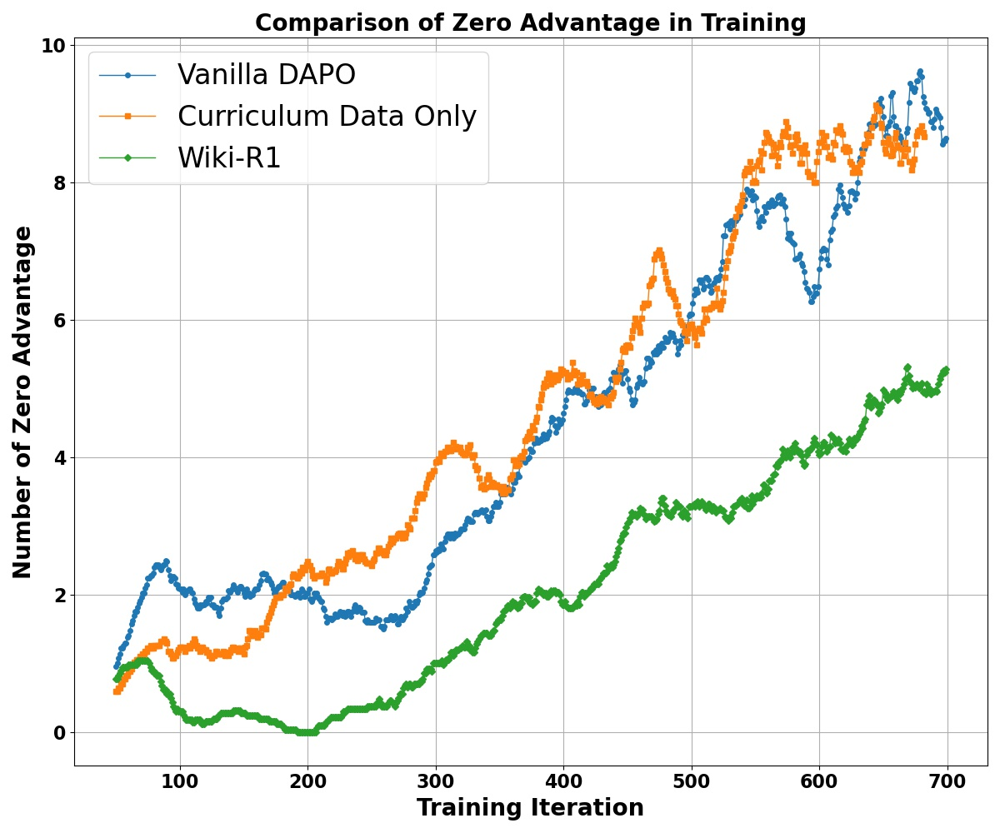
Left: Observation propagation reduces ignored trajectories and improves training efficiency.
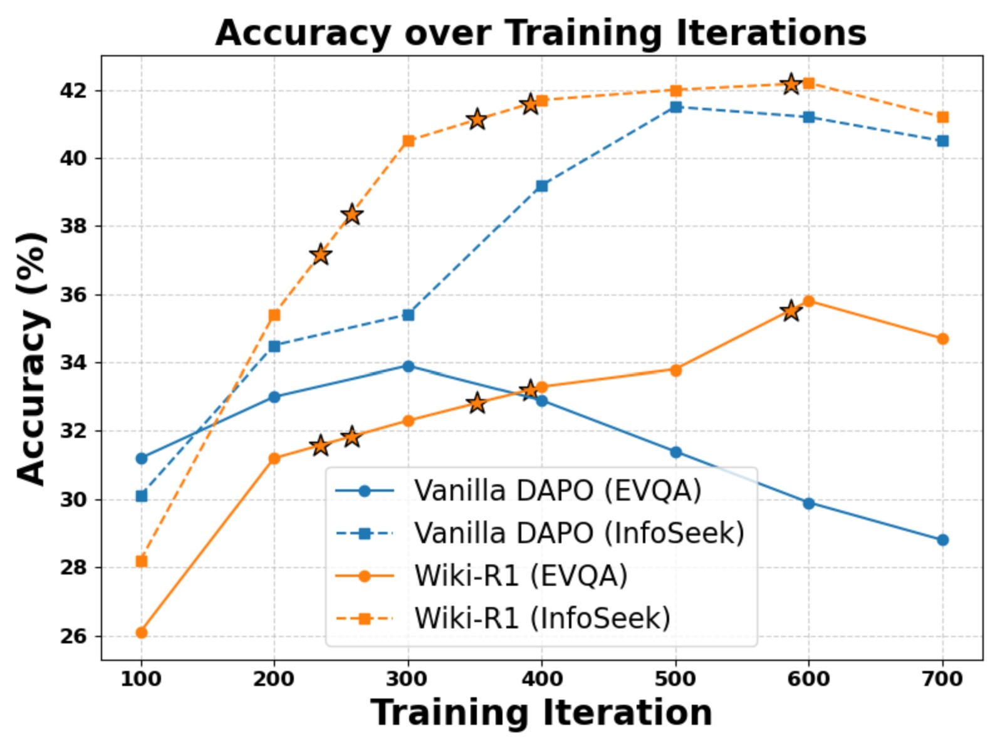
Right: Wiki-R1 achieves stable improvements; ⭐ denotes curriculum difficulty increases.
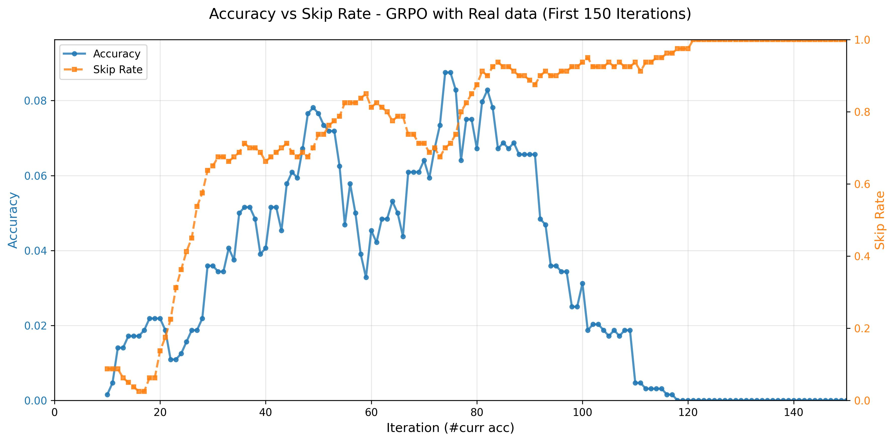
Better learning signals correlate with higher accuracy and lower skip rates.
Training Efficiency
Wiki-R1 requires substantially fewer training samples (40k total vs. 900k–5.4M for baselines) while achieving superior performance. The training takes only 36 A100 GPU-hours for 3B and 48 hours for 7B.
| Method | FT Retrieval | FT Generation | #Samples (EVQA) | #Samples (InfoSeek) | Time |
|---|---|---|---|---|---|
| Wiki-LLaVA | ✗ | ✓ | 916k | 903k | ~75 |
| Echosight | ✓ | ✗ | 916k | 903k | 40 |
| ReflectiVA | ✗ | ✓ | 2.9M | 2.5M | ~1,688 |
| Wiki-R1 (3B) | ✗ | ✓ | 20k | 20k | 36 |
| Wiki-R1 (7B) | ✗ | ✓ | 20k | 20k | 48 |
Hyperparameter Sensitivity & Robustness
We evaluate the sensitivity of two key hyperparameters: the curriculum gap threshold τ and the observation-propagation smoothing factor α. The model converges to similar final accuracy within the explored intervals, confirming that Wiki-R1 is robust to hyperparameter variations. We also verify experimental reliability with three independent runs, showing consistent final performance.
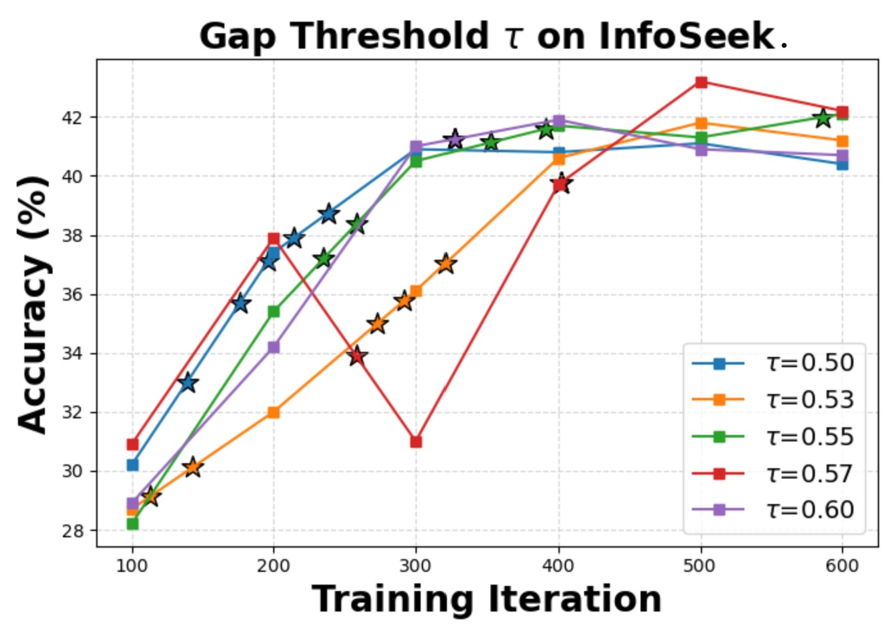
Gap threshold τ sensitivity on EVQA. ⭐ denotes curriculum difficulty increase.
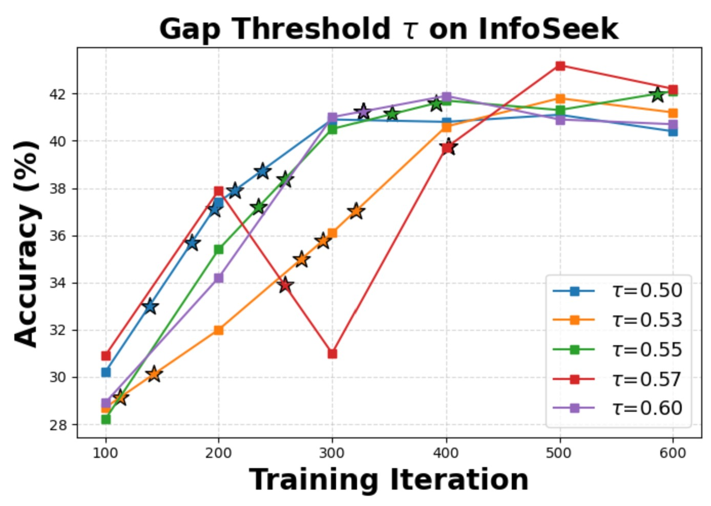
Gap threshold τ sensitivity on InfoSeek.
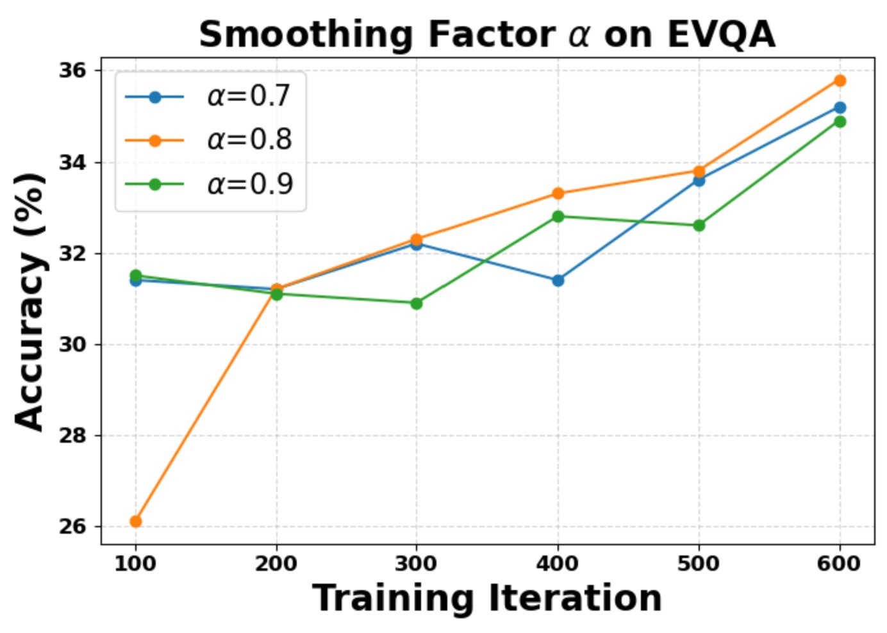
Smoothing factor α sensitivity on EVQA.
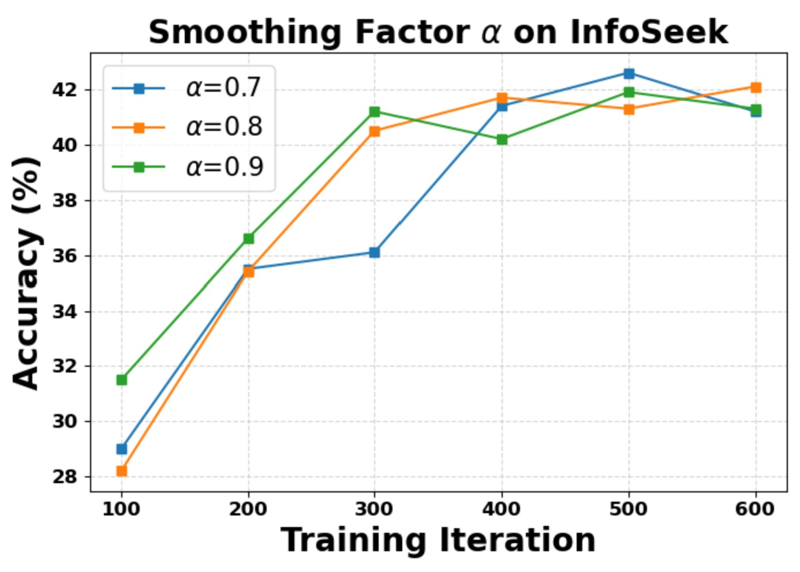
Smoothing factor α sensitivity on InfoSeek.
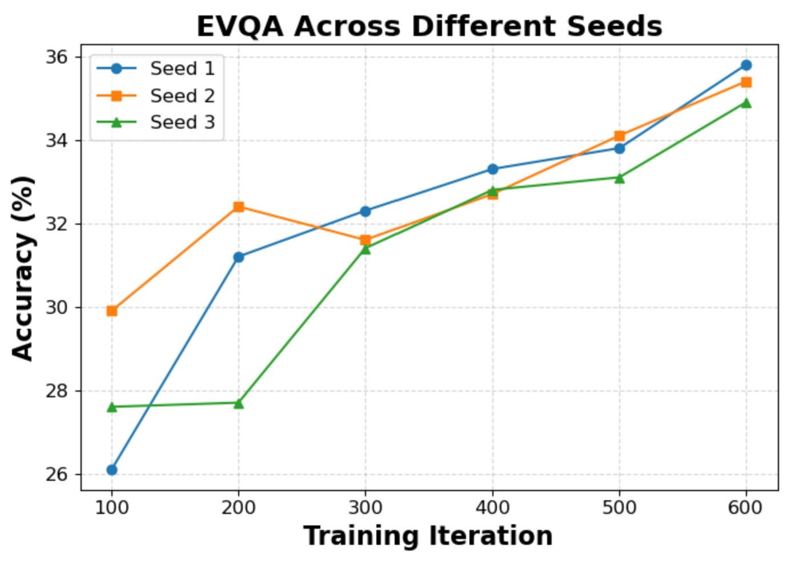
Stability across three independent runs (EVQA).
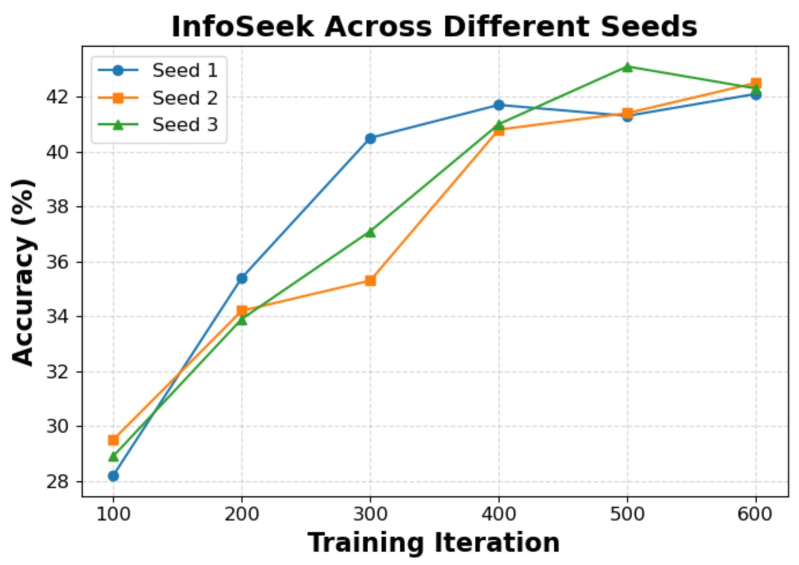
Stability across three independent runs (InfoSeek).
BibTeX
@inproceedings{ningwiki,
title={Wiki-R1: Incentivizing Multimodal Reasoning for Knowledge-based VQA via Data and Sampling Curriculum},
author={Ning, Shan and Qiu, Longtian and He, Xuming},
booktitle={The Fourteenth International Conference on Learning Representations}
}